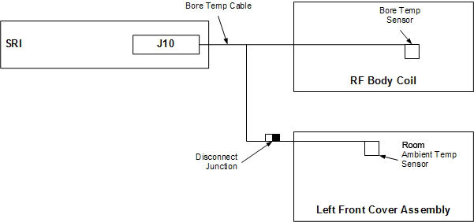

- 00000018WIA30D8AE20GYZ
- id_131058723.6
- Dec 11, 2024 8:26:12 PM
Room ambient and bore temperature sensors replacement
Prerequisites
| Required persons | Preliminary requirements | Procedure | Finalization |
|---|---|---|---|
| 1 person for each sensor replacement procedure | Not Applicable | 5 hours for bore temperature sensor; 1 hour for room ambient temperature sensor | 15 minutes |
| Item | Quantity | Effectivity | Part number | Manufacturer |
|---|---|---|---|---|
| Digital Volt Meter (DVM) | 1 | - | - | - |
| Nonmagnetic Titanium Service Tool Kit, Large Set | 1 | - | 5112581 | - |
| Item | Quantity | Effectivity | Part number | Manufacturer |
|---|---|---|---|---|
| Bore Temperature Cable and Sensor (Run 3350, MAG-SRI-J10 to Mag-Bore, Bore Temp Sensor) | 1 | - |
See FRU Manual | - |
| Room Ambient Temperature Sensor | 1 | - |
See FRU Manual | - |
| Condition | Reference | Effectivity |
|---|---|---|
| No required conditions. | - | - |
About this task
This procedure describes the replacement of the two temperature sensors associated with the magnet. The room ambient temperature sensor is located in the left front cover. The room ambient temperature sensor is clamped into the left cover, so the sensor can be replaced without replacing the cover. The patient bore temperature sensor is located inside the RF body coil. The room ambient temperature cable plugs into the bore temperature cable Room Ambient and Bore Temperature Sensors. The bore temperature cable then connects to the SRI at J10.

Room ambient temperature sensor replacement
Procedure
- Apply LOTO on the RF amplifier and PEN cabinet. Applying LOTO - RF Subsystem (magnet room electronics) and Applying LOTO - PEN Cabinet (magnet room electronics).
- Remove the side cover and left skirt cover. See Side Cover Removal and Installation and Skirt Cover Removal and Installation.
- Remove the front cover. See Front Cover Removal and Installation.
- This step links to a different cmodule than the previous step. Remove the front cover. See Front Cover Removal and Installation.
- Loosen the set screw holding the room ambient temperature sensor to the front cover, and then remove the sensor.
- To install a new room ambient temperature sensor, follow Step 1 through Step 5 (above) in reverse order.
Patient bore temperature sensor replacement
Procedure
- Route the new cable through the magnet enclosure and tape it
to the RF body coil at the 315 position. Reconnect the bore temperature
sensor cable at J10 on the SRI under the left side of the magnet enclosure,
and reconnect the room ambient temperature sensor cable.
Figure 2. Bore temperature sensor cable 
Finalization
Finalization
- Remove LOTO from the PEN cabinet. See Removing LOTO - RF Subsystem and/or PEN Cabinet.
- Perform a quick head and body scan to ensure that the system is functioning properly.